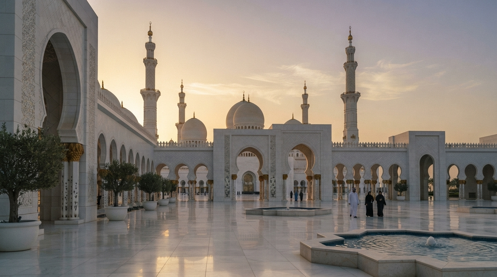

12 DOA IFTITAH

Doa iftitah adalah doa pembuka sholat yang dibaca setelah takbiratul ihram dan sebelum membaca Surah Al-Fatihah. Doa iftitah berisi pujian kepada Allah SWT, pengagungan, permohonan ampun, serta pengakuan atas kebesaran-Nya. Membaca doa iftitah hukumnya sunnah dan terdapat beberapa bacaan yang diajarkan Rasulullah SAW.
1. Doa Iftitah Allahumma Ba'id Baini
اللَّهُمَّ بَاعِدْ بَيْنِي وَبَيْنَ خَطَايَايَ كَمَا بَاعَدْتَ بَيْنَ الْمَشْرِقِ وَالْمَغْرِبِ، اللَّهُمَّ نَقِّنِي مِنْ خَطَايَايَ كَمَا يُنَقَّى الثَّوْبُ الْأَبْيَضُ مِنَ الدَّنَسِ، اللَّهُمَّ اغْسِلْنِي مِنْ خَطَايَايَ بِالْمَاءِ وَالثَّلْجِ وَالْبَرَدِ
Latin: Allahumma ba'id baini wa baina khathayaya kama ba'adta bainal masyriqi wal maghrib. Allahumma naqqini min khathayaya kama yunaqqats tsaubul abyadhu minad danas. Allahummaghsilni min khathayaya bil ma'i wats tsalji wal barad.
Artinya: Ya Allah, jauhkanlah aku dari dosa-dosaku sebagaimana Engkau menjauhkan antara timur dan barat. Bersihkanlah aku dari dosa sebagaimana pakaian putih dibersihkan dari kotoran. Cucilah dosa-dosaku dengan air, salju, dan air dingin.
2. Doa Iftitah Wajjahtu Wajhiya
وَجَّهْتُ وَجْهِيَ لِلَّذِي فَطَرَ السَّمَاوَاتِ وَالْأَرْضَ حَنِيفًا وَمَا أَنَا مِنَ الْمُشْرِكِينَ، إِنَّ صَلَاتِي وَنُسُكِي وَمَحْيَايَ وَمَمَاتِي لِلَّهِ رَبِّ الْعَالَمِينَ، لَا شَرِيكَ لَهُ وَبِذَلِكَ أُمِرْتُ وَأَنَا مِنَ الْمُسْلِمِينَ
Latin: Wajjahtu wajhiya lilladzi fatharas samawati wal ardha hanifan wa ma ana minal musyrikin. Inna shalati wa nusuki wa mahyaya wa mamati lillahi rabbil alamin. La syarika lahu wa bidzalika umirtu wa ana minal muslimin.
Artinya: Aku menghadapkan wajahku kepada Allah yang menciptakan langit dan bumi dengan lurus, dan aku bukan termasuk orang musyrik. Sesungguhnya sholatku, ibadahku, hidupku, dan matiku hanyalah untuk Allah, Tuhan seluruh alam. Tidak ada sekutu bagi-Nya. Demikianlah aku diperintahkan dan aku termasuk orang-orang Muslim.
3. Doa Iftitah Subhanaka Allahumma
سُبْحَانَكَ اللَّهُمَّ وَبِحَمْدِكَ وَتَبَارَكَ اسْمُكَ وَتَعَالَى جَدُّكَ وَلَا إِلَهَ غَيْرُكَ
Latin: Subhanaka Allahumma wa bihamdika, wa tabarakasmuka wa ta'ala jadduka, wa la ilaha ghairuka.
Artinya: Mahasuci Engkau, ya Allah, dan segala puji bagi-Mu. Mahaberkah nama-Mu, Maha Tinggi kemuliaan-Mu, dan tidak ada Tuhan selain Engkau.
4. Doa Iftitah Inna Shalati Wa Nusuki
إِنَّ صَلَاتِي وَنُسُكِي وَمَحْيَايَ وَمَمَاتِي لِلَّهِ رَبِّ الْعَالَمِينَ، لَا شَرِيكَ لَهُ وَبِذَلِكَ أُمِرْتُ وَأَنَا مِنَ الْمُسْلِمِينَ
Latin: Inna shalati wa nusuki wa mahyaya wa mamati lillahi rabbil alamin, la syarika lahu wa bidzalika umirtu wa ana minal muslimin.
Artinya: Sesungguhnya sholatku, ibadahku, hidupku, dan matiku hanyalah untuk Allah, Tuhan seluruh alam. Tidak ada sekutu bagi-Nya. Demikianlah aku diperintahkan dan aku termasuk orang-orang Muslim.
5. Doa Iftitah Allahu Akbar Kabira
اللَّهُ أَكْبَرُ كَبِيرًا وَالْحَمْدُ لِلَّهِ كَثِيرًا وَسُبْحَانَ اللَّهِ بُكْرَةً وَأَصِيلًا
Latin: Allahu akbar kabira, walhamdulillahi katsira, wa subhanallahi bukratan wa ashila.
Artinya: Allah Maha Besar dengan sebesar-besarnya kebesaran. Segala puji bagi Allah dengan pujian yang banyak. Mahasuci Allah pada waktu pagi dan petang.
6. Doa Iftitah Alhamdulillahi Hamdan Katsira
الْحَمْدُ لِلَّهِ حَمْدًا كَثِيرًا طَيِّبًا مُبَارَكًا فِيهِ
Latin: Alhamdulillahi hamdan katsiran thayyiban mubarakatan fih.
Artinya: Segala puji bagi Allah dengan pujian yang banyak, baik, dan penuh keberkahan.
7. Doa Iftitah Allahumma Lakal Hamdu
اللَّهُمَّ لَكَ الْحَمْدُ أَنْتَ قَيِّمُ السَّمَاوَاتِ وَالْأَرْضِ وَمَنْ فِيهِنَّ، وَلَكَ الْحَمْدُ، لَكَ مُلْكُ السَّمَاوَاتِ وَالْأَرْضِ وَمَنْ فِيهِنَّ
Latin: Allahumma lakal hamdu anta qayyimus samawati wal ardhi wa man fihinna, wa lakal hamdu, laka mulkus samawati wal ardhi wa man fihinna.
Artinya: Ya Allah, segala puji bagi-Mu. Engkau yang mengatur langit, bumi, dan segala yang ada di dalamnya. Engkau pemilik kerajaan langit, bumi, dan segala isinya.
8. Doa Iftitah Wajjahtu dengan Penyerahan Diri
وَجَّهْتُ وَجْهِيَ لِلَّذِي فَطَرَ السَّمَاوَاتِ وَالْأَرْضَ حَنِيفًا مُسْلِمًا وَمَا أَنَا مِنَ الْمُشْرِكِينَ
Latin: Wajjahtu wajhiya lilladzi fatharas samawati wal ardha hanifan musliman wa ma ana minal musyrikin.
Artinya: Aku menghadapkan wajahku kepada Allah yang menciptakan langit dan bumi dengan tulus dan berserah diri, serta aku bukan termasuk orang-orang musyrik.
9. Doa Iftitah Allahumma Rabba Jibril
اللَّهُمَّ رَبَّ جَبْرَائِيلَ وَمِيكَائِيلَ وَإِسْرَافِيلَ فَاطِرَ السَّمَاوَاتِ وَالْأَرْضِ عَالِمَ الْغَيْبِ وَالشَّهَادَةِ
Latin: Allahumma rabba Jibrila wa Mika'ila wa Israfil, fathiras samawati wal ardhi, alimal ghaibi wasy syahadah.
Artinya: Ya Allah, Tuhan Jibril, Mikail, dan Israfil, Pencipta langit dan bumi, Yang mengetahui perkara gaib dan nyata.
10. Doa Iftitah Memohon Petunjuk
اللَّهُمَّ اهْدِنِي لِمَا اخْتُلِفَ فِيهِ مِنَ الْحَقِّ بِإِذْنِكَ إِنَّكَ تَهْدِي مَنْ تَشَاءُ إِلَى صِرَاطٍ مُسْتَقِيمٍ
Latin: Allahumma ihdini limakhtulifa fihi minal haqqi bi idznik, innaka tahdi man tasya'u ila shirathim mustaqim.
Artinya: Ya Allah, berilah aku petunjuk terhadap kebenaran dalam perkara yang diperselisihkan dengan izin-Mu. Sesungguhnya Engkau memberi petunjuk kepada siapa yang Engkau kehendaki menuju jalan yang lurus.
11. Doa Iftitah Dzikir dan Istighfar
اللَّهُ أَكْبَرُ، الْحَمْدُ لِلَّهِ، سُبْحَانَ اللَّهِ، أَسْتَغْفِرُ اللَّهَ
Latin: Allahu akbar, alhamdulillah, subhanallah, astaghfirullah.
Artinya: Allah Maha Besar, segala puji bagi Allah, Mahasuci Allah, dan aku memohon ampun kepada Allah.
12. Doa Iftitah Dzul Malakut
اللَّهُ أَكْبَرُ، ذُو الْمَلَكُوتِ وَالْجَبَرُوتِ وَالْكِبْرِيَاءِ وَالْعَظَمَةِ
Latin: Allahu akbar, dzul malakuti wal jabaruti wal kibriya'i wal azhamah.
Artinya: Allah Maha Besar, pemilik kerajaan, kekuasaan, kebesaran, dan keagungan.
Hukum Membaca Doa Iftitah
Doa iftitah hukumnya sunnah dan dibaca setelah takbiratul ihram sebelum membaca Surah Al-Fatihah. Doa iftitah memiliki beberapa variasi bacaan yang diajarkan dalam riwayat. Seorang Muslim boleh membaca salah satu doa iftitah yang diketahui dan tidak harus membaca seluruh variasi dalam satu sholat.
Kesimpulan
Doa iftitah merupakan doa pembuka sholat yang berisi pujian kepada Allah SWT, pengagungan, permohonan ampun, serta penyerahan diri kepada-Nya. Dengan memahami maknanya, seorang Muslim diharapkan dapat melaksanakan sholat dengan lebih khusyuk, penuh kesadaran, dan ikhlas.